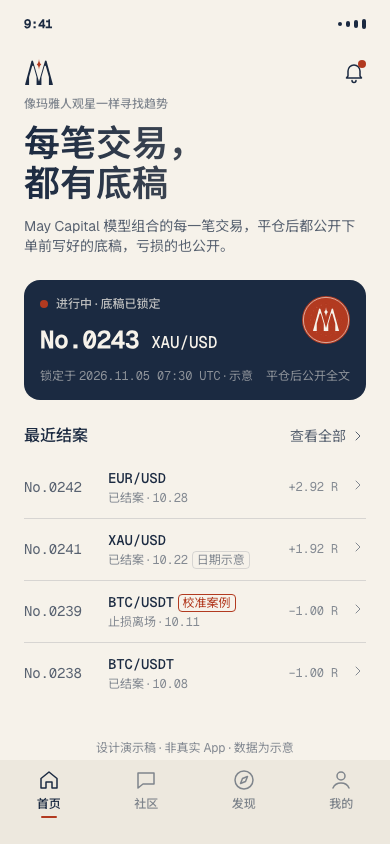

交易底稿 · Trade Record
No.0243
XAU/USD · 模型组合 · 日内
锁定于2026.11.05 07:30 UTC示意
当时依据
执行条件
执行记录
复核
结果
已锁定，原文不再改动平仓后公开全文
May Capital 模型组合的每一笔交易，下单前都写好底稿，
平仓后公开全文，亏损的那几笔也在里面。
右边这份刚锁定，平仓那天你就能读到全文。
10 月 11 日 07:45 锁定底稿，在 FVG 下沿挂限价单做空比特币。限价单等了 51 分钟才成交，12:13 触及止损价，按原条件离场。
复核同一规则的 9 笔已成交交易后，限价单有效期从“时段结束”改为“锁定后 30 分钟”，自 No.0240 起生效。No.0239 的原文一个字没动，改动写在后面的校准页里。
你读到的每一份底稿，都是下单前锁定的原文。结果好不好，你自己对照。
底稿写明为什么做、在哪个价位进、错了在哪里离场，锁定时间精确到秒。锁定后原文不再改动。
补上成交、离场和持仓期间的执行记录。赚了和亏了用同一个格式，你可以逐条对照当初写下的依据。
偏差出在哪、规则怎么调整、从哪一份底稿起生效，都写在校准页。No.0239 就是一例。

这一年模型组合的每一份底稿按编号排好，亏损的和校准过的都在里面。拿在手里，可以从第一份翻到最后一份。
{{待确认：出版时间、领取方式}}
结案、复核提醒也会推送给你。全部底稿可以下载 PDF 原件。
{{待确认：App Store 与安卓下载地址}}
